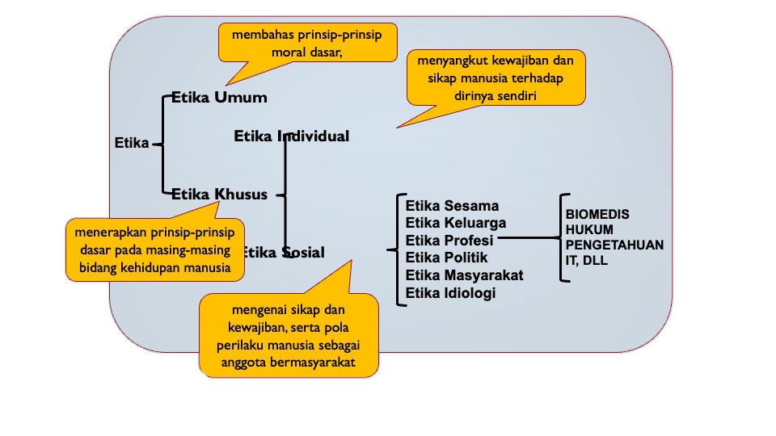

Gambar 1.2: Tempat kerja. (Sumber: freepik.com)
Gambar 1.2: Tempat kerja. (Sumber: freepik.com)
JEMBER, FAHMI PUTRA DENDI - Rangkuman materi Etika profesi pertemuan pada tanggal 5 September 2024 tentang: "Tinjauan Etika Profesi", Rabu (5/9/2024).
Alhamdulillah pertemuan mata kuliah Etika Profesi pada tanggal 5 September 2024 di Universitas Jember kemarin berjalan lancar. Pada pertemuan itu kami para mahasiswa diberi materi oleh Bapak Fahrobby Adnan S.Kom., M.MSI. tentang Tinjauan Etika Profesi.
Etika berasal dari bahasa yunani yaitu etos yang artinya kebiasaan/adat, perasaan batin atau kecenderungan batin yang mendorong manusia dalam perilakunya. Menurut KBBI, etika dijelaskan dengan membedakan tiga arti sebagai berikut:
- Ilmu tentang apa yang baik dan buruk dan tentang hak dan kewajiban moral (akhlak).
- Kumpulan asas atau nilai yang berkenaan dengan akhlak.
- Nilai mengenai benar dan salah yang dianut suatu golongan/masyarakat.
Etika menggambarkan standar perilaku yang diharapkan seseorang oleh sebuah kelompok (negara, profesi, organisasi) di mana seseorang berada. Berbeda dengan moral, yang merupakan keyakinan pribadi seseorang tentang benar dan salah.
Di sisi lain ada istilah hukum. Hukum adalah sistem peraturan yang memberi tahu kita apa yang bisa dan tidak bisa kita lakukan, sifatnya mengikat, dan didirikan oleh sebuah instansi/konstitusi (polisi, pengadilan, badan pembuat undang-undang).
Kita pernah mendengar tentang etika dan etiket. Apa perbedaannya? Etika sendiri menyangkut pada penaatan sebuah norma yang bergantung pada benar dan salah serta ruang lingkupnya. Sedangkan etiket menyangkut perilaku norma seseorang pada saat tidak sendiri atau berada di sekitar orang lain.

Gambar 1.3: Pembagian etika. (Sumber: Universitas Jember)